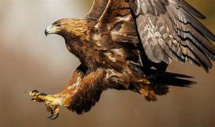

Águila es el nombre dado a las aves de presa, del orden de Accipitriformes,[1] (o Falconiformes acorde a una clasificación anterior),[2] familia Accipitridae, subfamilia Buteoninae. Pertenecen a varios géneros, los cuales están sujetos a una reclasificación más adecuada puesto que los expertos no llegan a una opinión consensuada. Las águilas se caracterizan principalmente por su gran tamaño, complexión robusta, cabeza y pico pesados. Las diversas especies y subespecies de águilas pueden encontrarse en casi cualquier parte del mundo excepto en la Antártida. Como todas las aves de presa, las águilas poseen un pico grande, poderoso y puntiagudo para desprender la carne de su presa. Cuentan también con tarsos y garras poderosas. Llama también la atención la fuerza de las águilas, que les posibilita alzar en vuelo presas mucho más pesadas que ellas. Además poseen una vista extremadamente aguda que les permite visualizar potenciales presas a distancia; por ejemplo, el águila real posee dos puntos focales en sus ojos, uno para mirar de frente y otro para localizar la mirada hacia los costados escudriñando a distancia. Las águilas han sido utilizadas por muchos pueblos como símbolo nacional y especialmente símbolo imperial, mostrando tanto poderío como belleza. Del Imperio romano es que, en general, otros estados han tomado la forma más usual del emblema con un águila; el Imperio bizantino aportó el símbolo del águila bicéfala. El águila era sinónimo de poder para muchos pueblos antiguos como los Mochica del antiguo Perú, mayas y aztecas.